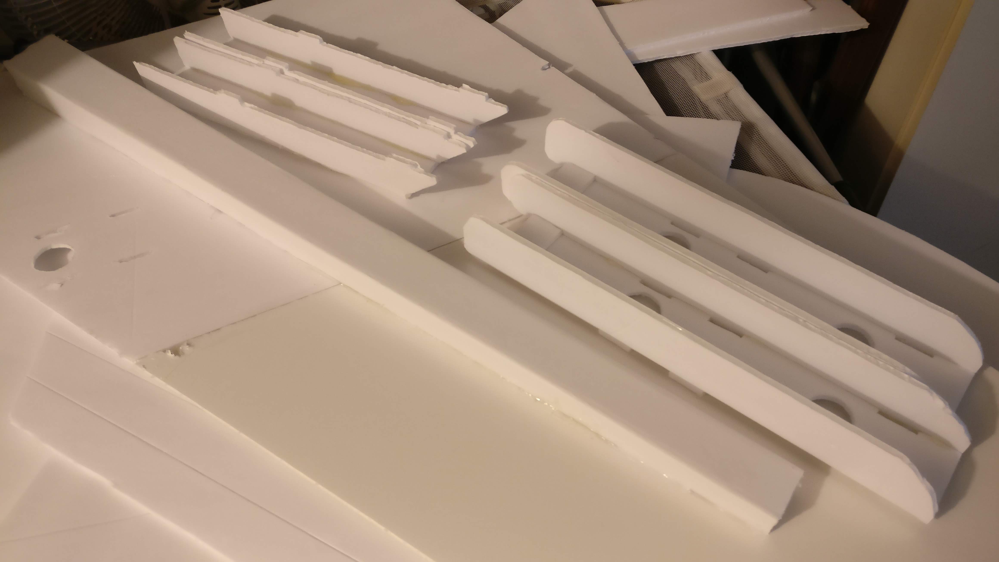
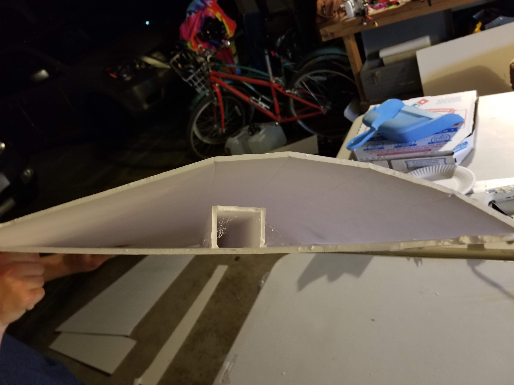
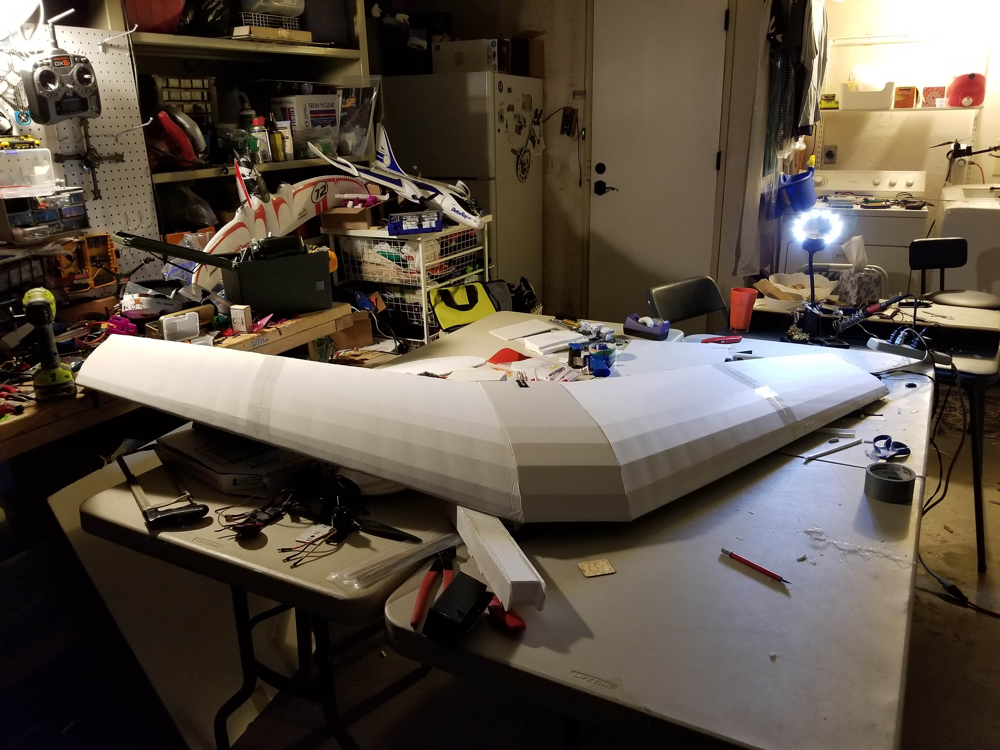
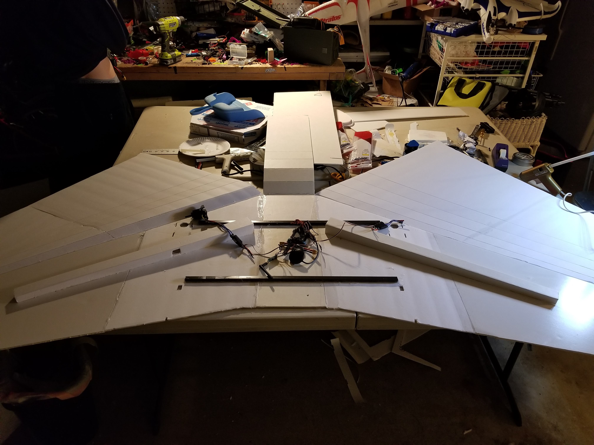
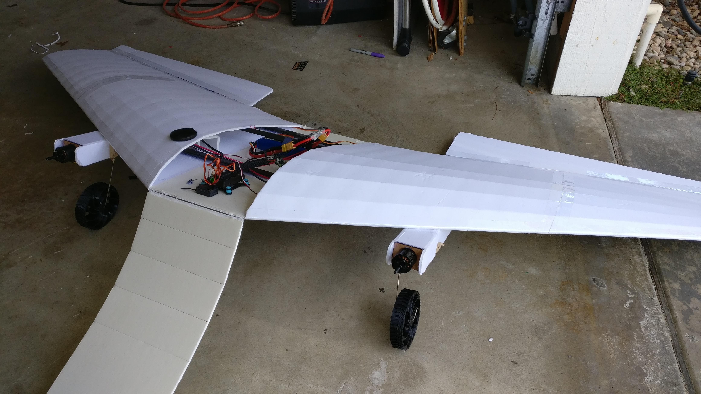
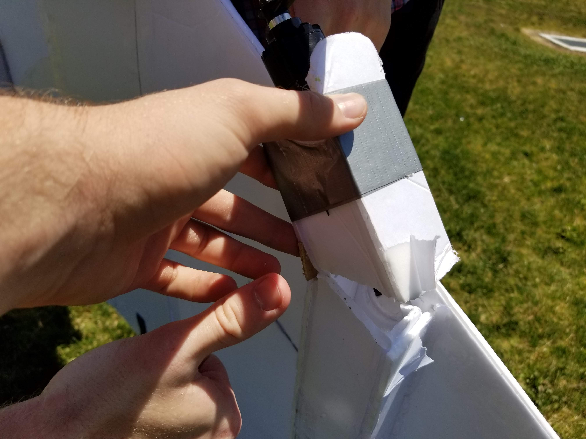
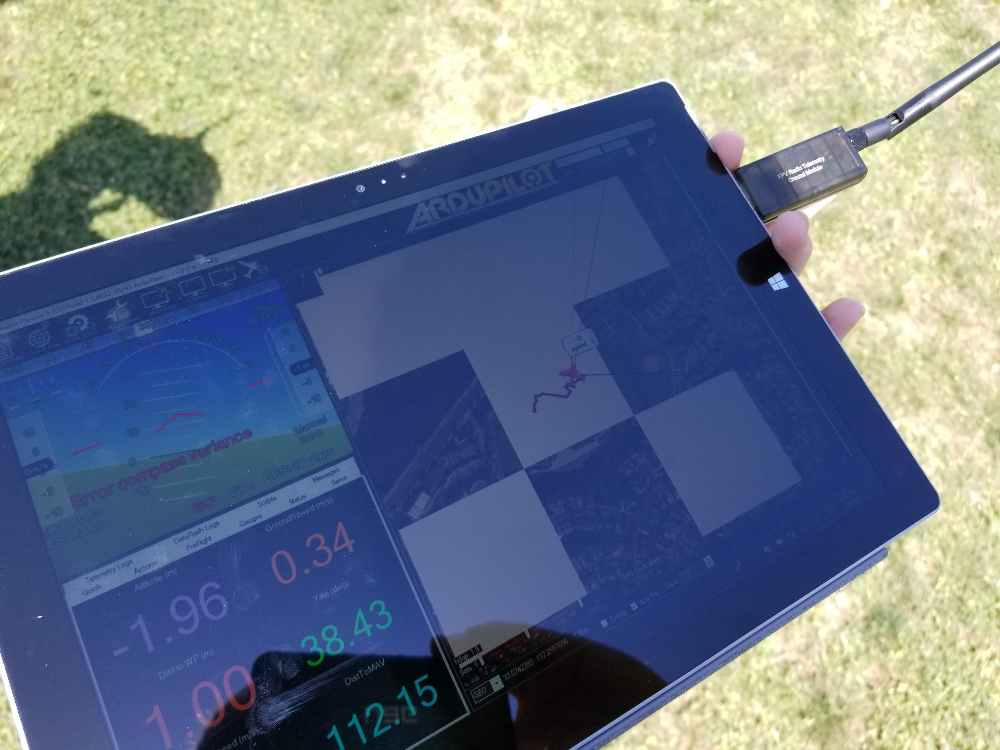

For one of my physics classes, Physics C, I along with 3 other group members built an autonomous (capable) drone. We had about 3 weeks to start and finish our project before we had to present it to our class, so we had to immediately get to work if we wanted to make that deadline. If you don't want to read through the buildup as to how we reached our success (sort of), here's a video recapping the whole thing. The criteria for our project was the following:
- Demonstrate our gained physics knowledge
- Combine our skill sets from robotics, mechanical engineering, drones, and data science to make something awesome
- Spend less than $50
- Have fun
With that being said, here's the breifly documented processes of what 3 weeks of googling, constant troubleshooting, and lots of duct tape and zip ties looks like:
Design the electronics layout and wing
This part of the project turned into "lets just figure out how the parts fit together while we make them" because we very quickly realized we barely had any time to work on this project while having to simultaneously study for finals. We already knew we wanted to make a 'fixed wing' drone with a huge wingspan (to help satisfy the coolness factor of the project), so after a couple hours of googling and sketching, we had a rough idea of how to get all of this done.

Buy all needed materials
Being that all 4 of us have accumulated a mass of electronics, stock material, tools, and quadcopter parts from previous personal projects, we technically only spent $20 (just ignore the $1000s sunk into our extra parts/material from racing drones, 3D printers, and FRC robots). Needing only foam board for the drone frame, aluminum extrusion for spars, glue gun sticks, and wood dowels for ailerons and extra support, we quickly got to work making this think.
Construct the wing (this took a long time)
This part consisted of the 4 of us cutting shapes out of foam board, messing up, and repeating that process about 1 or 2 more times before getting parts we were satisfied with for about 16 hours over the course of two days. We then got to hot glueing everything, and after many burnt fingers, achieved constructing something that resembled a Delta-wing drone.


Wire servos, motors, control system, and FPV system
Soldering everything together was pretty easy, and besides trying to get our laser cut mounts for the ailerons to work, mounting everything else took no more than a couple of hours. Trying to get our flight controller to work with our flight optimization and path finder software was a difficult though. After an evening of finding the right version of firmware for our flight controller and breaking our receiver to actually get info off the drone, we finally got everything working.


Tune controls for better manual flying
After a few "test flights", we realized that our drone had way too much lift and too little control. If there was any sort of breeze, the wind would pick up the drone and take it wherever it wanted. We tried numerous fixes to better our flight quality and give us a bit of actual control as to which direction we want the drone to fly, but everything seemed pretty pointless. Adjusting the range of our ailerons helped stability slightly, but all parameter changes for auto leveling, gps tracking, and differential thrust did little help.


Get autonomous functions to work
I had initially wanted practice applying my knowledge of deep learning in computer vision to track people/landmarks in real-time with our drone, but due to things not going to plan just as they do with all engineering projects, I had to dial back my ambitions and settle with trying to get a popular drone pathfinder software to work with our delta-wing. With how scary it was to just manually fly this thing, the autonomous pathfinder software was pretty much unable to do anything because every flight would end in an abrupt crash or in a tree moments after takeoff.

Prepare presentation
While not being able to showcase our autonomous functionalities and having very shaky flight quality, we were still pretty impressed with what we produced by the night before our presentation. We had learned a lot and had a ton of fun working on this project that sucked up all of our free time for a few weeks, and it's still something I vividly remember and cherish from my time in highschool. If you haven't watched it already, here's a video that encompasses what we've accomplished:

Here's some additional footage of us flying it infrot of our class and 50+ students: